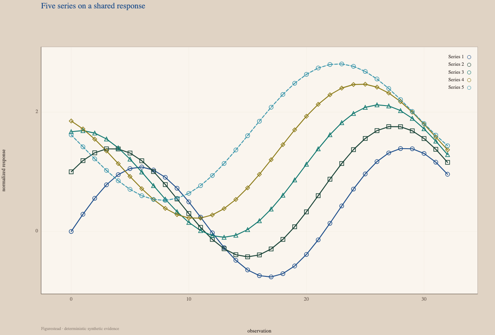
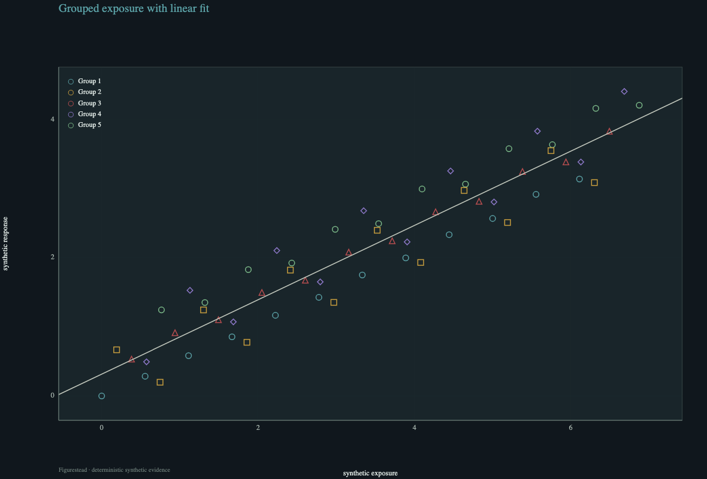
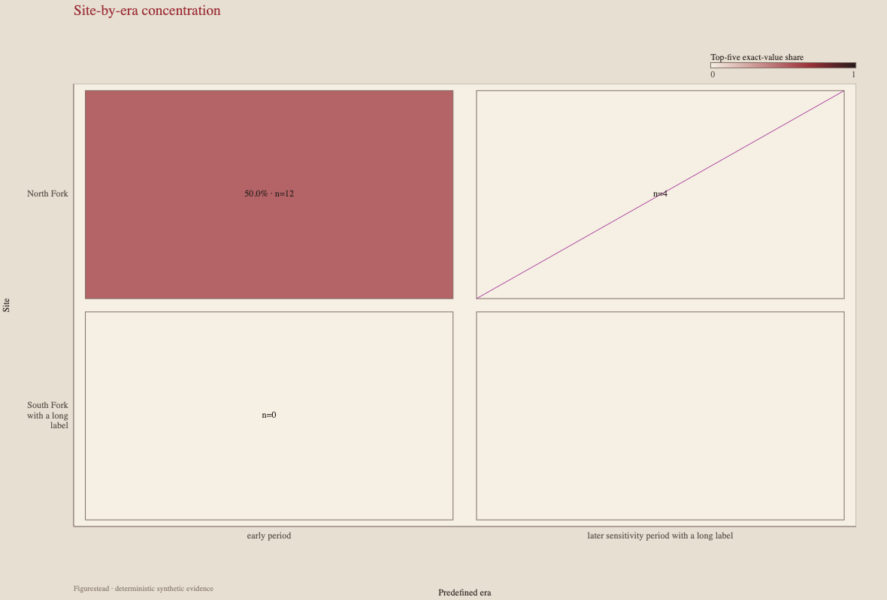
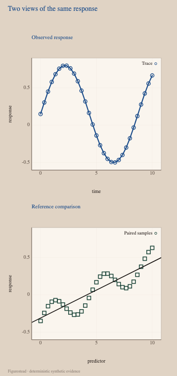
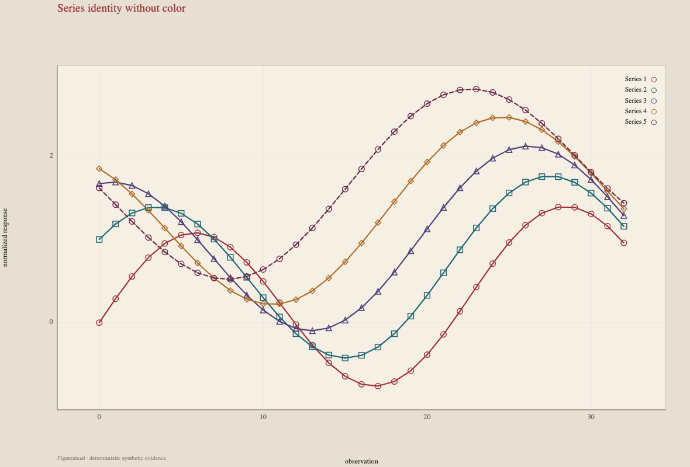
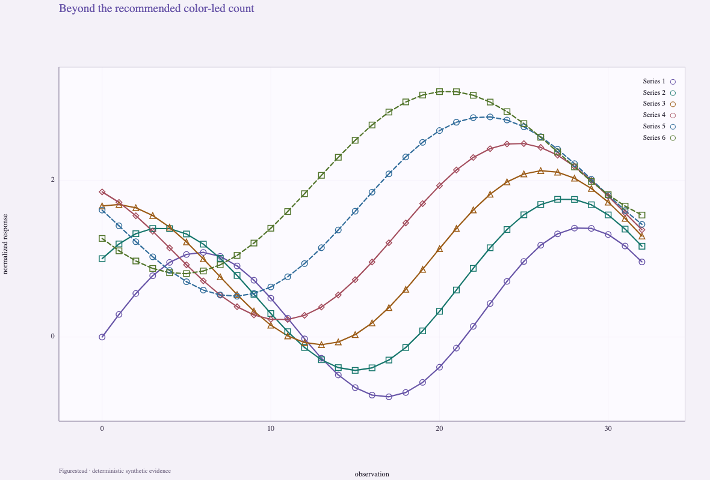
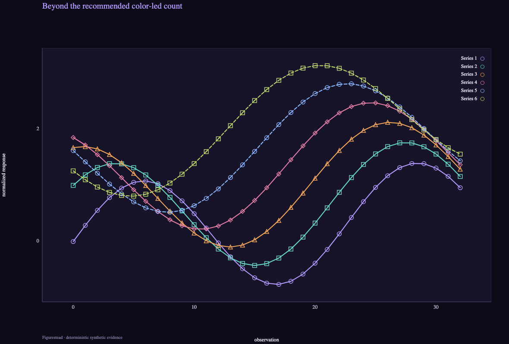
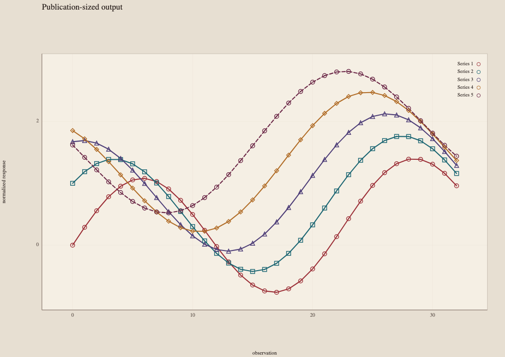

Deterministic synthetic evidence
Evidence atlas
Eight focused cases make the public alpha's visual and scientific boundaries inspectable.
01
Five series on a shared response
Five deterministic series share one response scale.

02
Grouped exposure with linear fit
Grouped synthetic exposure retains its fitted relationship.

03
Categorical response matrix
Categorical cells preserve labels, values, and comparison structure.

04
Two views of the same response
The integrated phone layout keeps both views legible and distinct.
Observed response
Reference comparison

05
Series identity without color
Marker and dash redundancy retain identity without color.

06
Summary and threshold remain distinct
Derived summary and reference threshold remain separate evidence layers.

07
Beyond the recommended color-led count
Six-series stress evidence uses redundant encodings beyond the recommended color-led count.


08
Publication-sized output
Digital paper evidence measures a 6.372 pt minimum label; no physical printer proof is claimed.
